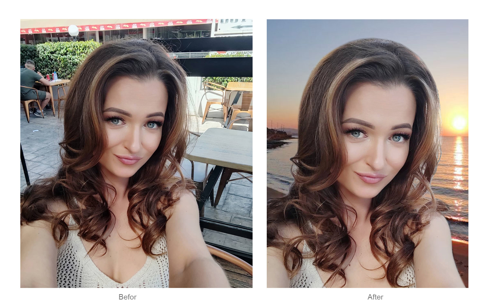
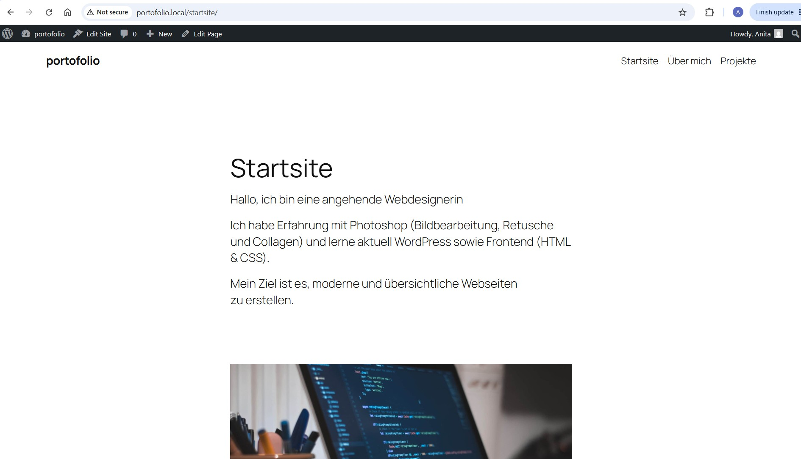
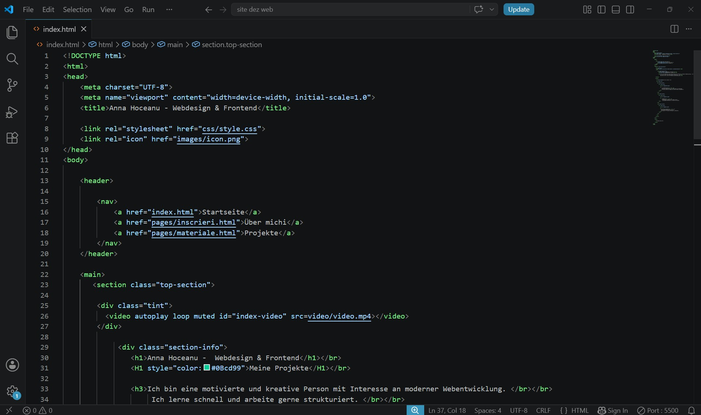

Anna Hoceanu - Webdesign & Frontend
Meine Projekte
Ich interessiere mich für moderne Webentwicklung und gestalte erste eigene Webseiten mit HTML, CSS und WordPress. Ich arbeite strukturiert, lerne schnell und entwickle meine Fähigkeiten kontinuierlich weiter. Mein Ziel ist es, praktische Erfahrung im IT-Bereich zu sammeln und mich beruflich weiterzuentwickeln.
Meine Fähigkeiten

Bildbearbeitung mit Photoshop Retusche, Hintergrundänderung und Farbkorrektur (Before / After).

Webdesign Erstellung von Webseiten mit HTML und CSS sowie erste Erfahrungen mit WordPress

Frontend Grundlagen Erste praktische Erfahrungen mit HTML und CSS sowie Verständnis für Struktur und Layout von Webseiten